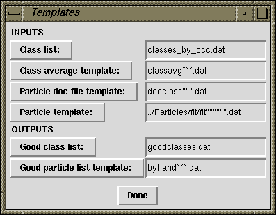

(Modified 2013 Nov 22)
Verifybyview
Python/Tkinter Graphical User Interface
(Screen captures may not be up-to-date)
Getting started:
The inputs for this program are primarily from verify-class-byview.spi -- a list of classes, class-average images, and class-to-particle look-up tables -- plus filtered images.
If your image files are on remote computers, I'd suggest at least checking if network transfer is the limiting step. To do so, you'd have to xhost that remote computer and set the environment. Jamie LeBarron reminded me how to do this:
on computer you are in front of: xhost +FarAwayComputerName on terminal of FarAwayComputer: setenv DISPLAY BoxInFrontOfMeName:0
For the purpose of illustration below, assume I will be running the program from the reconstruction: Averages directory.
Procedure:
Assuming the python source file is in your $PATH, one would run it by typing:
verifybyview &If you're running it for the first time, there will be some pre-set defaults, e.g., that the document files (input and output) are in the directory views/prj001, and that the class list is called listclasses.dat. An initial settings window will open:
If your data extension is not .dat, be sure to change it here. The rest of the defaults should be consistent with the batch files. If you need to change them, you can use the text field or click on the buttons at the left to navigate the directories.
Alternatively you could, at startup, include a directory as an argument (the rationale for this argument is that directory navigation can be slow):
verifybyview views/prj001 &or alternatively with the class-list document as an argument:
verifybyview views/prj001/listclasses.dat &Now, a montage of class-averages will pop up.

When you click on a class-average for the first time, there will be a pop-up window asking for inputs and outputs.

The first two you will have entered by now. The rest are new, but in general I've set the default names such that you shouldn't need to change them. (For subsequent class-montages, this template box will not appear.) Now, the montage of individual particles will appear.

This part should be intuitive. Sometimes, clicking on the bad particles and inverting the selection is easier. Shift-clicking will select the contiguous stretch of particles from the last one you selected. SHIFT will "paint" a selection series (when you enter a new image, not the current one).
There are some keyboard shortcuts here (also available in Help -> Keyboard shortcuts):
Now, save the good-particle list and close the window.
After you close the particle-montage window, the color of the background for the class-average will change: green if you kept particles, or red if you kept none. Your console window will say how many particles you saved from a particular class. So if you're not sure if you saved it, check there.
A final series of class-averages might look like the following:

It isn't necessary to click on all of the averages. For example, I'm fairly sure classavg008 won't have many good particles.
You can save your list of goodclasses with File -> Save selection. If you're going to be changing to a different directory (i.e., different reference-view), just change the path in the directory-field and click on the Save+Update button. Lather, rinse, repeat.
If you forget to save the list of good classes one or more times, there is a batch file in the VerifyMisc/ directory called byhand2goodclasses.spi which will generate them from the byhand*** files that are created when you save a class.
There are some keyboard shortcuts here also (as above, shown in Help -> Keyboard shortcuts). The class-average window uses 'ALT' instead of 'CTRL' for shortcuts, in case you're confused as to which window you're in.
Development Rationale:
The three modes of particle-verification ('classes only', 'first good', 'by hand') were an attempt to offer various degrees of control over which particles we kept. As things stood, using WEB, each additional layer of control adds quite a bit more complexity. Intrinsically, better quality control implies more intervention, but my goal was to minimize the extra intervention. To that end, I wrote a graphical interface specifically for the classification-based particle-verification routine. These Python scripts weren't written from scratch, but rather adapted from the SPIRE accessories:
What I wanted classavg.py to do was to be able to select classes and write output. In contrast, I didn't need to change montage.py very much, except adding features, as noted below.
Recent modifications:
A more complete list of changes is shown in the source code.